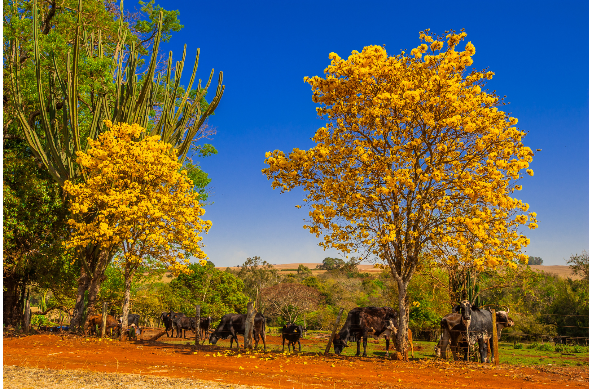
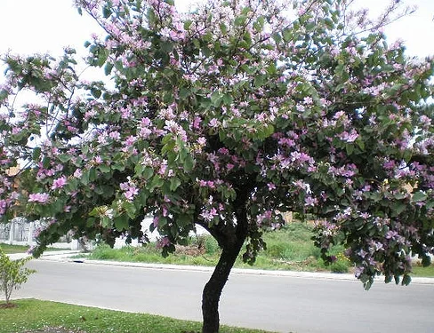

Solução
Plantas adaptadas a temperaturas mais elevadas poderiam ser uma escolha para uma cidade sofrendo os efeitos da “ilha de calor”. Assim, essas plantas poderiam contribuir para a dissipação do calor.



Plantas adaptadas a temperaturas mais elevadas poderiam ser uma escolha para uma cidade sofrendo os efeitos da “ilha de calor”. Assim, essas plantas poderiam contribuir para a dissipação do calor.

